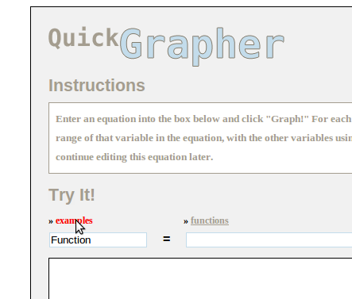
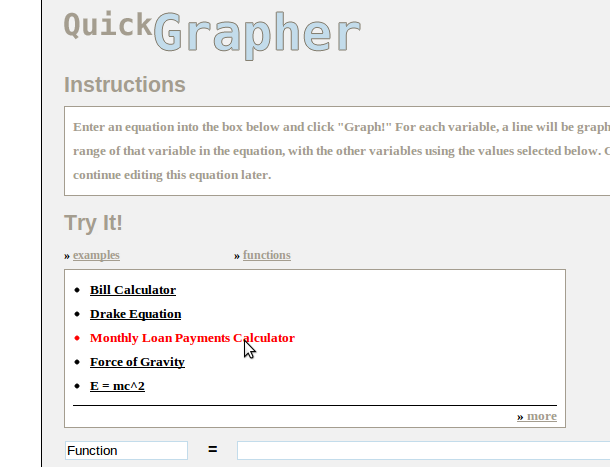
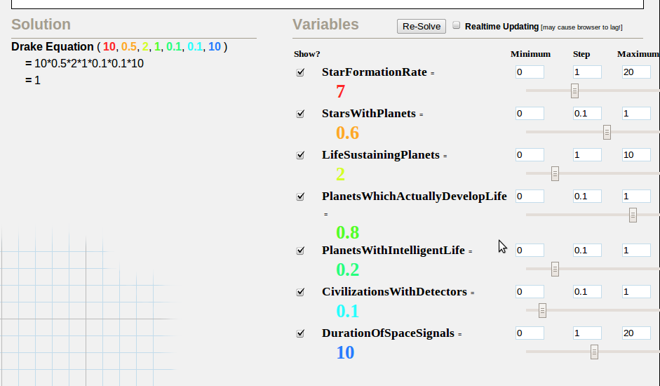
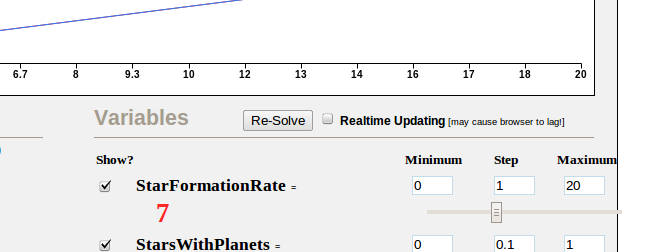
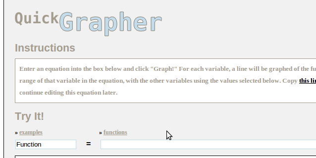
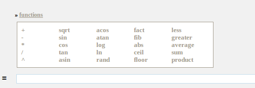
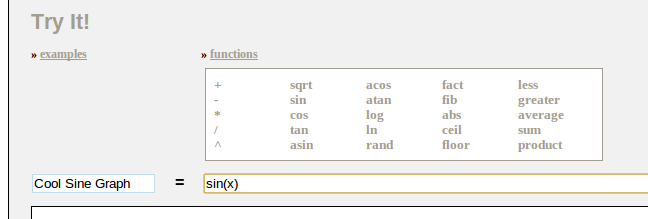
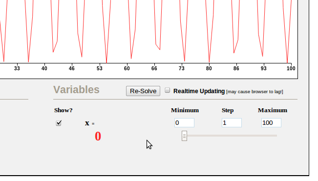
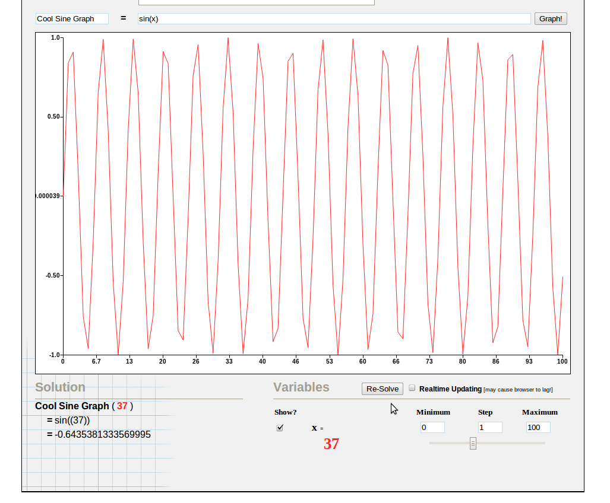

QuickGrapher - A Quick Start Guide
QuickGrapher is an equation graphing and interaction tool designed from the ground up to be easy to use and intuitive. If you have never used QuickGrapher before and are wondering where to begin, have a look at the two step-by-step annotated walkthroughs below. Or, you can view a set of introductory videos here and read a list of frequently asked questions here.
Walkthrough 1 - Interacting With An Equation
- Select An Equation From the Examples Box  
- Adjust the Variable Values with Sliders 
- Click Re-Solve, or Enable "Dynamic Graph Updates" 
Walkthrough 2 - Creating an Equation
- Select Functions From the Functions Box  
- Name Your Graph and Enter Variables 
- Click "Graph!"
- Adjust the Variable Values with Sliders 
- Click Re-Solve, or Enable "Dynamic Graph Updates" 